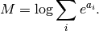
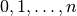
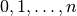

Miscellaneous¶
The module best.misc contains functions that do not fit anywhere else in best.
- best.misc.logsumexp(a)¶
Computes in a stable way the following expression for the array a:

It uses the log-sum-exp trick.
Parameters: a (1D numpy array.) – An array. Returns:  as defined above.
as defined above.Return type: float
- best.misc.multinomial_resample(p)¶
This functions accepts a probability distribution
 over
.
This function returns the result of sampling
over
.
This function returns the result of sampling  times from
this distribution.
times from
this distribution.Parameters: p (1D numpy array) – An array of positive numbers. Returns: An array of integers tween 0 and p.shape[0] - 1. Return type: 1D numpy array of int. Here is a small example:
from best.misc import multinomial_resample p = [0.25, 0.25, 0.25, 0.25] multinomial_resample(p)
This should print something like:
array([0, 2, 2, 3], dtype=int32)